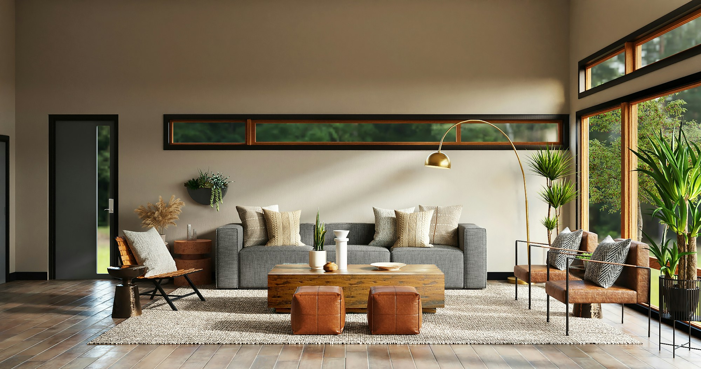

层叠玻璃材质检视
拖动小面板和大面板，在两栏中分别调节参数。
主题
浅色
深色
背景原图
室内
湖畔罂粟
草地人物
碧水岩石
瀑布步桥
配方
基础试值
原配方
基础 + 调色
基础 + 静态细噪点
浅色轮廓试值
自定
重置位置

拖动小面板
词性
不限
无词性
n
v
adj
不限
无词性
n
v
adj
重置
取消
应用
拖动大面板
快速录入
关闭
词形
atala
发音
/ˈta.la/
标签
释义 1